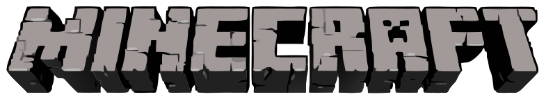

Click to play WASD move · Space jump / swim up
Hold left click: mine blocks · Click: attack
Right click: place (uses inventory!) · Mine to collect more
1-8 / mouse wheel: select block · Middle click: pick block
P: change camera view · Hold C: crouch / sneak
E / Tab / mouse side button: inventory + crafting · log→4 planks · 2 planks→4 sticks
4 planks → crafting table · place it + right-click for 3x3 tool crafting!
Watch out for zombies at night!

Minecraft Online - single file demo
Select World
Create New World
Will be saved in: New World
Search for resources, build, and survive the night